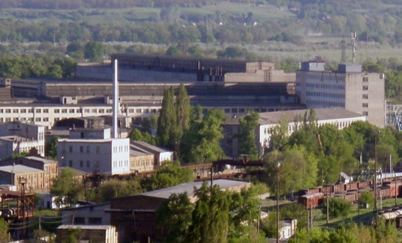
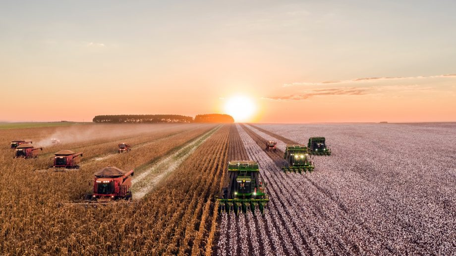

Маємо знати що Україна посідає:
-
1-ша в Європі по виробництву аміаку;
-
2-га та 4-та за розмірами система газопровідного газопроводу
Європи;
-
3-е за розміром в Європі та 8-е за розміром у світі за
розміром встановлених потужностей атомних електростанцій;
-
3-е місце в Європі та 11-е в світі за довжиною залізничної
мережі (21,700 км);
-
3-е місце в світі (після США та Франції) по виробництву
локаторів та локаційного обладнання;
-
3-й за величиною експортер заліза у світі;
-
4-й за величиною експортер турбін для атомних електростанцій у
світі;
-
4-й найбільший у світі виробник ракетних установок;
-
4 місце в світі з експорту глини;
-
4-е місце в світі по експорту титану;
-
8-е місце в світі за експортом руд та концентратів;
-
9-е місце в світі по експорту продукції оборонної
промисловості;
-
10-й за величиною виробник сталі у світі (32,4 млн тонн).
Україна - важлива індустріально-виробнича країна

-
1-й в Європі за доведеними відновлюваними запасами уранових
руд;
-
2-е місце в Європі та 10-е місце в світі за запасами титанової
руди;
-
2-е місце у світі за дослідженими запасами марганцевих руд
(2,3 млрд тонн, або 12% світових запасів);
-
2-е за розмірами запасів залізної руди у світі (30 млрд тонн);
-
2-е місце в Європі за запасами ртутної руди;
-
3 місце в Європі (13 місце в світі) за запасами сланцевого
газу (22 трлн кубометрів)
-
4-е місце у світі за загальною вартістю природних ресурсів;
-
7 місце у світі за запасами вугілля (33,9 млрд тонн)
Україна - важлива аграрна країна

-
1-ша в Європі за кількістю площі орної землі;
-
3-е місце в світі за площею чорного грунту (25% від світового
об'єму);
-
1-е місце в світі за експортом соняшникової олії;
-
2 місце в світі по виробництву ячменю та 4 місце по експорту
ячменю;
-
3-й найбільший виробник та 4-й за величиною експортер кукурудзи у
світі;
-
4-й за величиною виробник картоплі у світі;
-
5-й за величиною виробник жита у світі;
-
5 місце в світі по виробництву бджіл (75 000 тонн);
-
8 місце в світі по експорту пшениці;
-
9-е місце у світі з виробництва курячих яєць;
-
16-е місце в світі по експорту сиру.